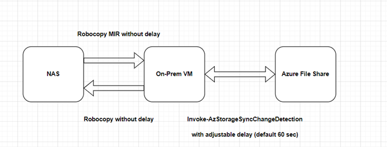
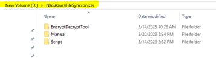
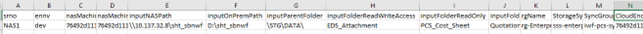
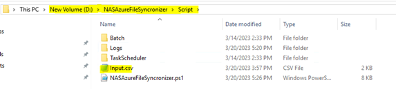
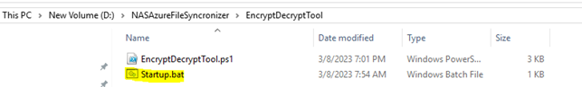
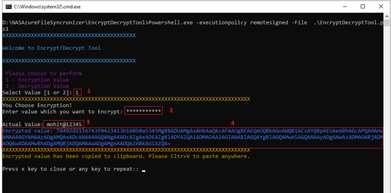
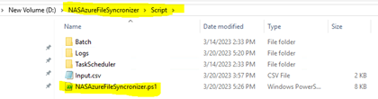
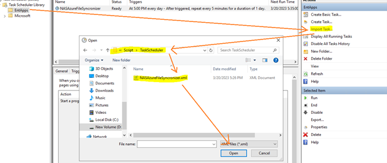
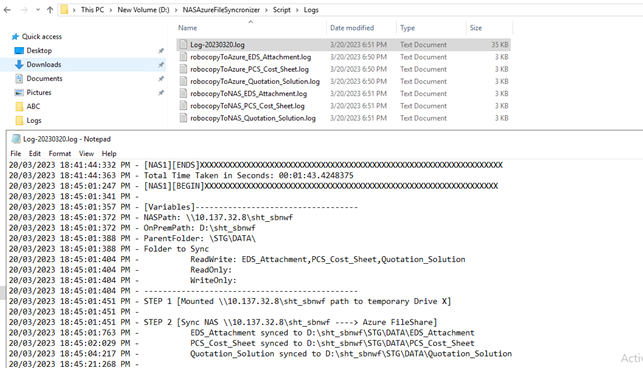

NASAzureFileSyncronizer (Sync NAS(OnPrem) to Jump Server to Azure Cloud)
1.1 Assumption & Limitation
- Between OnPrem Jump Server to NAS, Robocopy is in place without /MIR i.e., copy-paste is happening between those endpoints, due to which anything deleted from Azure File Share will never be deleted from NAS.
- Intentional & Adjustable Delay has been added between Azure File Share to OnPrem Jump Server to avoid any potential data/file loss.
- Below diagram is the logical plan of the solution:

Consideration on the Solution provided:
- Azure Storage Sync Service will take care of syncing from Windows Server (On Prem) to Azure file share by services, so we have not added any code in the main script to handle that.
- CSV will be the only input file to the main script.
- For multiple NAS connections, please add input files to the main script. Based on that, the task scheduler frequency to run should be around every 10 minutes.
- A mechanism has been added to capture logs on a specific path which will be shared in the SOP document.
1.2 Step 1 - Provide Input using CSV file [One Time Activity]
-
Download the Tool Zip Package
(link)
to a specific Jump Server where we have storage sync service installed onto D: Drive and extract the file there:

-
Navigate to Path
D:\NASAzureFileSyncronizer\Script, and copy Input.csv file on your local machine for modification (for better visual on the data):

| Header |
Header Value |
Explanation |
| srno |
NAS1, NAS2 |
Serial No. |
| ennv |
Example: dev, sit, uat, prd |
Environment Name |
Once the changes are made to input.csv, copy back the input file from local machine to OnPrem Path
D:\NASAzureFileSyncronizer\Script.

1.3 Step 2 - Encrypt Confidential Value [One Time Activity]
-
Go to EncryptDecryptTool, on the path where you copied the zip file, navigate to
D:\NASAzureFileSyncronizer\EncryptDecryptTool and double-click on “Startup.bat”.

- Encrypt the below values to add them in the input.csv file:
- nasMachineUserName
- nasMachinePwd
- CloudEndpointName

1.4 Step 3 – Verify Main PowerShell Script
- Navigate to
D:\NASAzureFileSyncronizer\Script\NASAzureFileSyncronizer.ps1.

1.5 Step 4 – Create & Configure Task Scheduler
- Open “Task Scheduler” --> Click on Import Task.
- Navigate to path:
D:\NASAzureFileSyncronizer\Script\TaskScheduler and import NASAzureFileSyncronizer.xml to create and configure the task Scheduler.

1.6 Step 5 – Logging
Logs are generated here for every run:
D:\NASAzureFileSyncronizer\Script\Logs.
Housekeeping policy keeps the last 5 days’ logs only.
